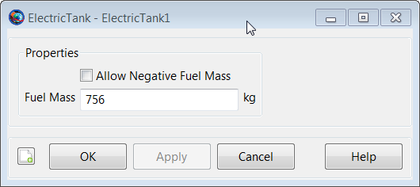

ElectricTank — A model of a tank containing fuel for an electric propulsion system
An ElectricTank is a model of a tank and is required for finite burns employing an electric propulsion system. To use an ElectricTank, you must first create the tank, and then attach it to the desired Spacecraft and associate it with an ElectricThruster as shown in the example below. Additionally you must create a SolarPowerSystem or NuclearPowerSystem and attach it to the Spacecraft.
For a complete descripton of how to configure all Resources required for electric propulsion modelling, see the Tutorial named Chapter 12, Electric Propulsion
See Also ElectricThruster,NuclearPowerSystem,SolarPowerSystem
| Field | Description | ||||||||||||
|---|---|---|---|---|---|---|---|---|---|---|---|---|---|
| AllowNegativeFuelMass | This field allows the ElectricTank to have negative fuel mass which can be useful in optimization and targeting sequences before convergence has occurred. This field cannot be modified in the Mission Sequence.
| ||||||||||||
| FuelMass | The mass of fuel in the tank.
|
The ElectricTank dialog box allows you to specify properties of a fuel tank. The layout of the ElectricTank dialog box is shown below.
|  |
An ElectricTank is used in conjunction with finite maneuvers. To implement a finite maneuver, you must first create both an ElectricThruster and a FiniteBurn resource. You must also associate the ElectricTank with the ElectricThruster resource and you must associate the ElectricThruster with the FiniteBurn resource. The finite maneuver is implemented using the BeginFiniteBurn/EndFiniteBurn commands. See the BeginFiniteBurn/EndFiniteBurn command documentation for worked examples on how the ElectricTank resource is used in conjunction with finite maneuvers.
For a complete descripton of how to configure all Resources required for electric propulsion modelling, see the Tutorial named Chapter 12, Electric Propulsion
Create a default ElectricTank and attach it to a Spacecraft and ElectricThruster.
% Create the ElectricTank Resource
Create ElectricTank aTank
aTank.AllowNegativeFuelMass = false
aTank.FuelMass = 756
% Create an ElectricThruster and assign it a ElectricTank
Create ElectricThruster aThruster
aThruster.Tank = {aTank}
% Add the ElectricTank and Thruster to a Spacecraft
Create Spacecraft aSpacecraft
aSpacecraft.Tanks = {aTank}
aSpacecraft.Thrusters = {aThruster} As exhibited below, there are some subtleties associated with
setting and getting parent vs. cloned resources. In the example above,
aTank is the parent ElectricTank
resource and the field aSpacecraft.Tanks is populated
with a cloned copy of aTank.
Create a second spacecraft and attach a fuel tank using the same
procedure used in the previous example. Set the
FuelMass in the parent resource,
aTank, to 900 kg.
% Add the ElectricTank and ElectricThruster to a second Spacecraft
Create Spacecraft bSpacecraft
bSpacecraft.Tanks = {aTank}
bSpacecraft.Thrusters = {aThruster}
aTank.FuelMass = 900 %Can be performed in both resource and
%command modesNote that in the example above, setting the value of the parent
resource, aTank, changes the fuel mass value in both
cloned fuel tank resources. More specifically, the value of both
aSpacecraft.aTank.FuelMass and
bSpacecraft.aTank.FuelMass are both now equal to the
new value of 900 kg. We note that the assignment command for the parent
resource, aTank.FuelMass, can be performed in both
resource and command modes.
To change the value of the fuel mass in only the first created spacecraft, aSpacecraft, we do the following.
% Create the Fuel Tank Resource
BeginMissionSequence
aTank.FuelMass = 756 %Fuel tank mass in both s/c set back to default
aSpacecraft.aTank.FuelMass = 1000 %Can only be performed in command mode. As a result of the commands in the previous example, the value of
aSpacecraft.aTank.FuelMass is 1000
kg and the value of bSpacecraft.aTank.FuelMass is 756
kg. We note that the assignment command for the cloned resource,
aSpacecraft.aTank.FuelMass, can only be performed in
command mode.
By default, GMAT will not allow the fuel mass to be negative. However, occasionally in iterative processes such as targeting, a solver will try values of a maneuver parameter that result in total fuel depletion. Using the default tank settings, this will throw an exception stopping the run unless you set the AllowNegativeFuelMass flag to true. GMAT will not allow the the total spacecraft mass to be negative. If DryMass + FuelMass is negative GMAT will throw an exception and stop.
Create a default ElectricTank and attach it to a Spacecraft and ElectricThruster.
% Create the ElectricTank Resource
Create ElectricTank aTank
aTank.AllowNegativeFuelMass = false
aTank.FuelMass = 756
% Create an ElectricThruster and assign it a ElectricTank
Create ElectricThruster aThruster
aThruster.Tank = {aTank}
% Add the ElectricTank and ElectricThruster to a Spacecraft
Create Spacecraft aSpacecraft
aSpacecraft.Tanks = {aTank}
aSpacecraft.Thrusters = {aThruster}
BeginMissionSequence